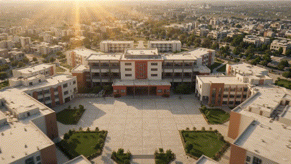

From Nau Meel
to Iqbal Shaheed Road
St. Paul’s began in 1940 as a modest primary school run by the Franciscan Missionaries at Nau Meel (Kala Pul), serving the educational needs of the neighbourhood’s poor. In its first twelve nomadic years the school moved through the Braganza Building, Younis Building on Frere Street, and rooms borrowed from St. Patrick’s Cathedral — before the Catholic Church secured the present site, a former British cemetery yard, and built its first ten-room schoolhouse.
In 1952, St. Paul’s sent up its first batch for the S.S.C. Examination — achieving a cent-percent result in the process.
